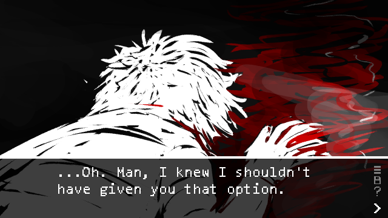
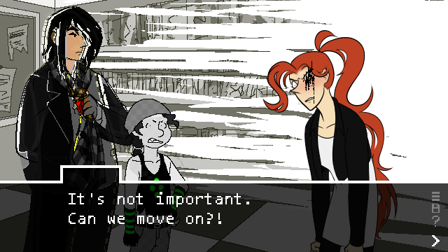
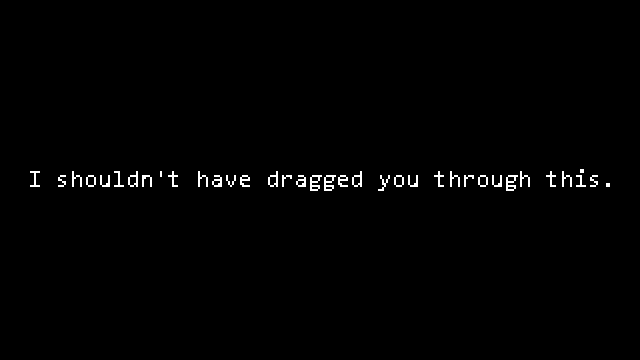

A grayscale sketch of a kids’ bedroom, with two beanbags in front of a TV and a bunk bed.
The speaker is different. Unlike Val, this one’s words are in all lowercase.
plot twist: the game was never finished.

Game screenshot featuring a cutscene graphic of the second character facedown on the ground in a pool of blood. Dialogue: “…Oh. Man, I knew I shouldn’t have given you that option.”
someone got the bright idea to give the player a “tour.”

A badly-corrupted screenshot. A void rips into the backround, one character’s sprite is trying in vain to render multiple simultaneously, and another’s is slightly transparent. Val, no longer pixelated, is furious; one of her eyes glitches out. Dialogue, speaker tag missing: “It’s not important. Can we move on?!”
which worked out great.

Text in a void. “I shouldn’t have dragged you through this.”